我的邀请注册链接：https://www.digitalocean.com/?refcode=69cda22205ee 注册后账户可获得10￥可使用资金
原帖地址：https://www.zxc.so/do-ssh-key.html
创建SSH Key
- 第一步，打开PuTTY Key Generator，Parameters选择SSH-2 RSA，点击Generate。（如图一）
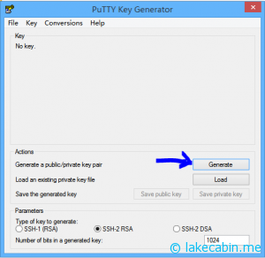
- 然后软件会显示Please generate some randomness by moving mouse over the blank area，意思是用鼠标在软件区域内随意移动来生成随机的密钥（如图二）
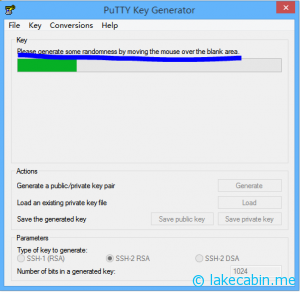
- 随后公钥（存放在服务器用于验证私钥）和密钥（如与公钥匹配则可通过认证）都生成成功了，首先复制上方的公钥代码（如图三蓝色区域），注意：复制完千万不要关闭窗口
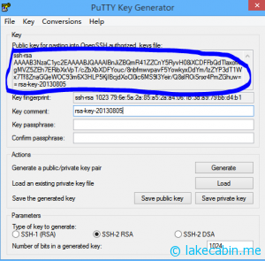
上传SSH Key
- 接下来登录DigitalOcean的控制面板，进入SSH Keys选项卡，点击Add SSH Key（如图四）
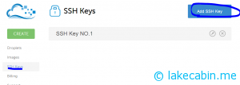
- 进入添加界面后为Key取个名字，然后将刚刚复制的公钥（Public Key）粘贴到下方的输入框，点击CREATE SSH KEY（如图五）
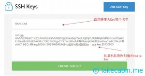
注意：添加的SSH Key只能用于新创建的Droplet的root用户，对于已创建的Droplet或者其他用户的，我以后会写文章说明。
随后点击最顶部的CREATE（如图六）
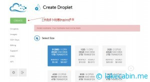
- 在填好Droplet的各项信息之后，在Add optional SSH Keys的选项选择你刚刚创建的那个SSH Key（如图七） 注意：使用SSH Key新建的Droplet不会发送root密码，建议用Key登录之后使用passwd命令修改root密码（密码强度建议：长度24位以上，大小写字母，数字，特殊符号混合），以备不时之需（如Key不在身旁等等）
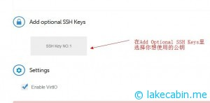
- 然后回到PuTTY Key Generator的界面，点击下方的Save private key，选择路径保存你的私钥，然后就能使用SSH Key登录VPS了！（如图八），注意：不要保存在公用电脑上，任何持有私钥的人都能合法登录VPS。
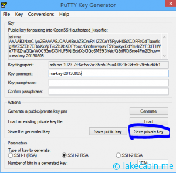
PuTTY使用SSH Key登录VPS流程
- 首先打开PuTTY软件，输入root@服务器IP和端口（一般为22），然后点击SSH》Auth（如图九）
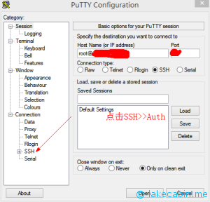
- 然后在Private key file for authentication选项选择你的SSH私钥的路径（后缀为.ppk）（如图十）。然后记得回到登陆页点击Default Settings》Save保存设置
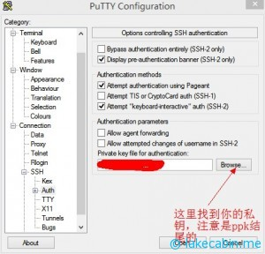
- 然后点击Open就能自动登录了，全程自动化，完全不需要输入任何东西。（图十一为登录成功界面）
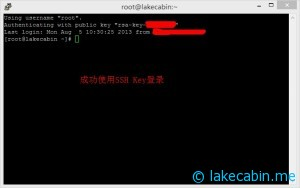
WinSCP使用SSH Key登录VPS流程
- WinSCP是像FTP一样使用SSH管理文件的软件，配置方法和PuTTY大同小异，而且下面的图也标注的很清楚，我也就不再一一赘叙了。 图十二：WinSCP登录账号配置
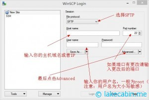
- 图十三：WinSCP选择SSH Key
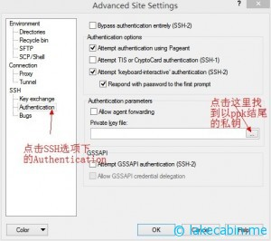
- 图十四：WinSCP使用SSH Key成功登录
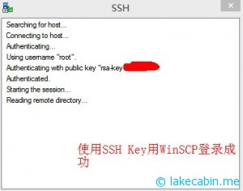
Disqus 留言
comments powered by Disqus